F5 Identity and Access Management Solutions > 300 Series: Advanced Use Cases & Solutions Source | Edit on
Lab 4: SAML Identity Provider (IdP) - LocalDB Auth¶
Task 1 - Setup Lab Environment¶
To access your dedicated student lab environment, you will need a web browser and Remote Desktop Protocol (RDP) client software. The web browser will be used to access the Unified Demo Framework (UDF) Training Portal. The RDP client will be used to connect to the jumphost, where you will be able to access the BIG-IP management interfaces (HTTPS, SSH).
Click DEPLOYMENT located on the top left corner to display the environment
Click ACCESS next to jumphost.f5lab.local

Select your RDP resolution.
The RDP client on your local host establishes a RDP connection to the Jump Host.
Login with the following credentials:
- User: f5lab\user1
- Password: user1
After successful logon the Chrome browser will auto launch opening the site https://portal.f5lab.local. This process usually takes 30 seconds after logon.
Click the Classes tab at the top of the page.

Scroll down the page until you see 301 SAML Federation on the left
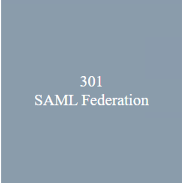
Hover over tile SAML Identity Provider (IdP) - LocalDB Auth. A start and stop icon should appear within the tile. Click the Play Button to start the automation to build the environment
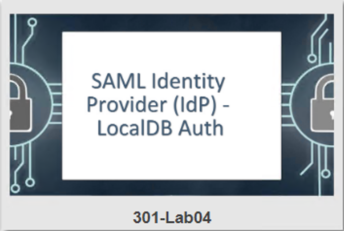 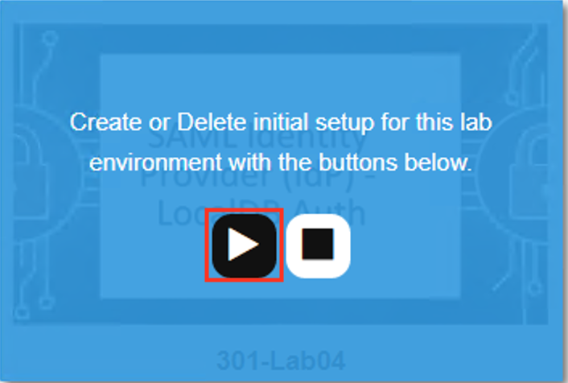 The screen should refresh displaying the progress of the automation within 30 seconds. Scroll to the bottom of the automation workflow to ensure all requests succeeded. If you experience errors try running the automation a second time or open an issue on the Access Labs Repo.
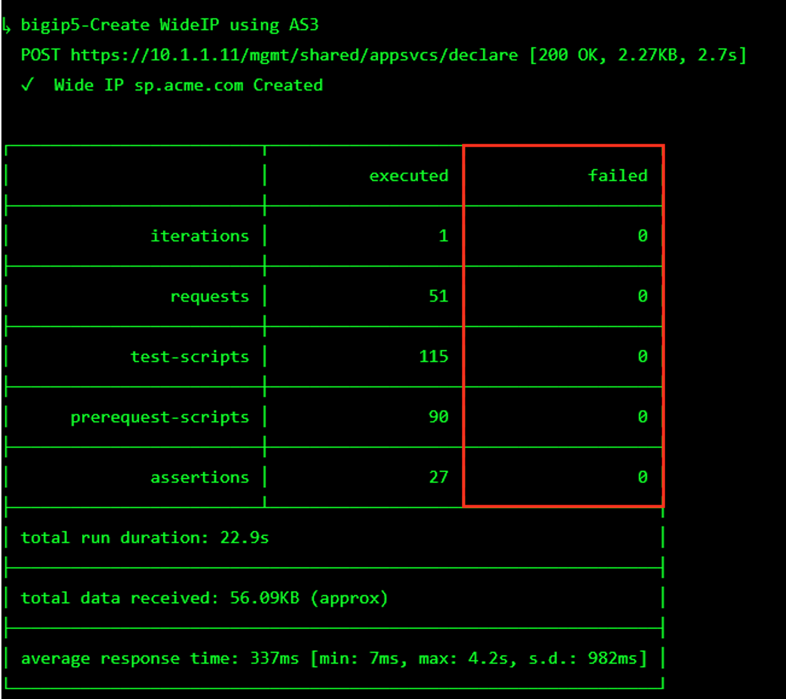
TASK 2 ‑ Configure the SAML Identity Provider (IdP)¶
IdP Service¶
Begin by selecting: Access ‑> Federation ‑> SAML Identity Provider ‑> Local IdP Services
Click the Create button (far right)

In the Create New SAML IdP Service dialog box, click General Settngs in the left navigation pane and key in the following:
IdP Service Name: idp.acme.comIdP Entity ID: https://idp.acme.com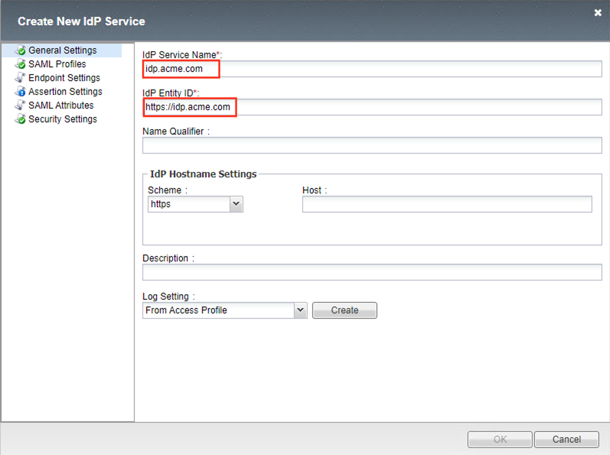
Note
The yellow box on “Host” will disappear when the Entity ID is entered
In the Create New SAML IdP Service dialog box, click Assertion Settings in the left navigation pane and key in the following:
Assertion Subject Type: Persistent Identifier(drop down)Assertion Subject Value: %{session.logon.last.username}(drop down)
In the Create New SAML IdP Service dialog box, click Security Settings in the left navigation pane and key in the following:
Signing Key: /Common/idp.acme.com(drop down)Signing Certificate: /Common/idp.acme.com(drop down)Note
The certificate and key were previously imported
Click OK to complete the creation of the IdP service

SP Connector¶
Click on External SP Connectors (under the SAML Identity Provider tab) in the horizontal navigation menu
Click specifically on the Down Arrow next to the Create button (far right)
Select From Metadata from the drop down menu
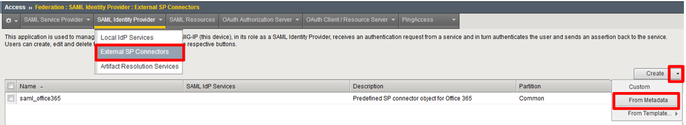
In the Create New SAML Service Provider dialogue box, click Browse and select the sp_acme_com.xml file from the Desktop of your jump host
In the Service Provider Name field, enter the following:
sp.acme.comClick OK on the dialog box

Note
The sp_acme_com.xml file was created previously. Oftentimes SP providers will have a metadata file representing their SP service. This can be imported to save object creation time as has been done in this lab.
Click on Local IdP Services (under the SAML Identity Provider tab) in the horizontal navigation menu

Select the Checkbox next to the previously created
idp.acme.comand click the Bind/Unbind SP Connectors button at the bottom of the GUI
In the Edit SAML SP’s that use this IdP dialog, select the
/Common/sp.acme.comSAML SP Connection Name created previouslyClick the OK button at the bottom of the dialog box

Under the Access ‑> Federation ‑> SAML Identity Provider ‑> Local IdP Services menu you should now see the following (as shown):
Name: idp.acme.comSAML SP Connectors: sp.acme.com
TASK 3 - Create a SAML Resource¶
Begin by selecting Access ‑> Federation ‑> SAML Resources >> **+ (Plus Button)

In the New SAML Resource window, enter the following values:
Name: sp.acme.comSSO Configuration: idp.acmem.comCaption: sp.acme.comClick Finished at the bottom of the configuration window
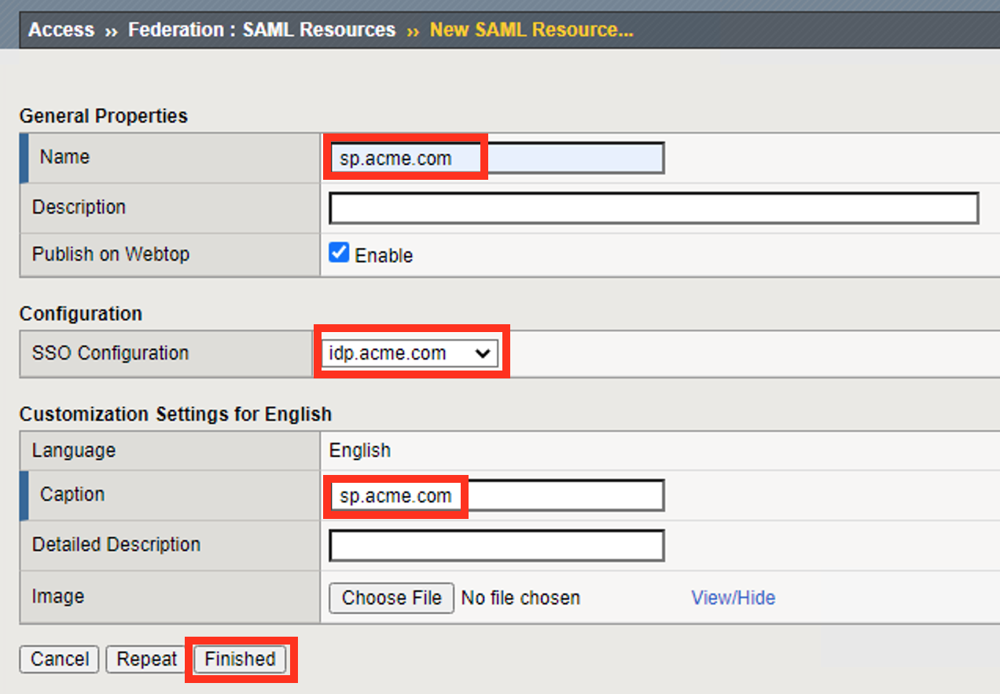
Task 4 - Create a Webtop¶
Select Access ‑> Webtops ‑> Webtop Lists >> + (Plus Button)

In the resulting window, enter the following values:
Name: full_webtopType: Full(drop down)Minimize To Tray uncheckClick Finished at the bottom of the GUI

Task 5 - Create a Local Dabasebase¶
Navigate to Access >> Authentication >> Local User DB >> Instances >> + (Plus Symbol).
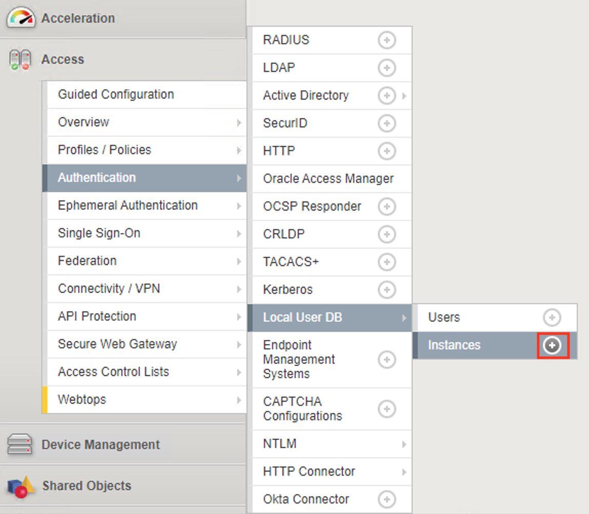
In the Create New Local User DB Instance window, enter the following information:
Name: usersLockout Interval: 600Lockoout Threshold: 3Dynamic User Remove Interval: 1800Click OK
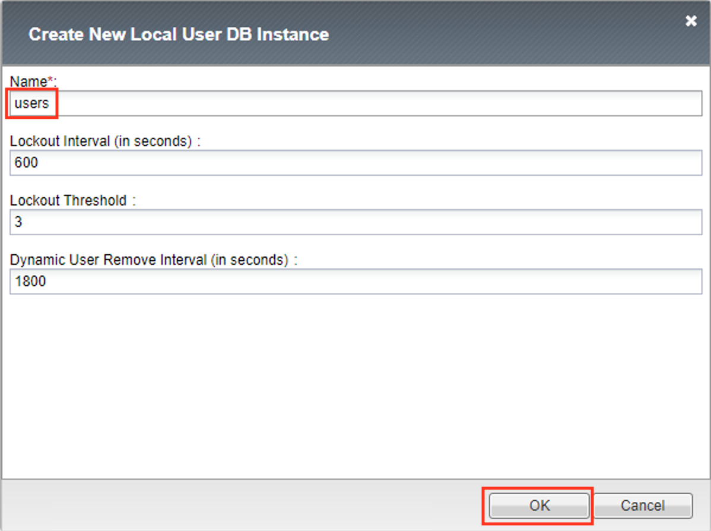
Navigate to Access >> Authentication >> Local User DB >> Users >> + (Plus Symbol).
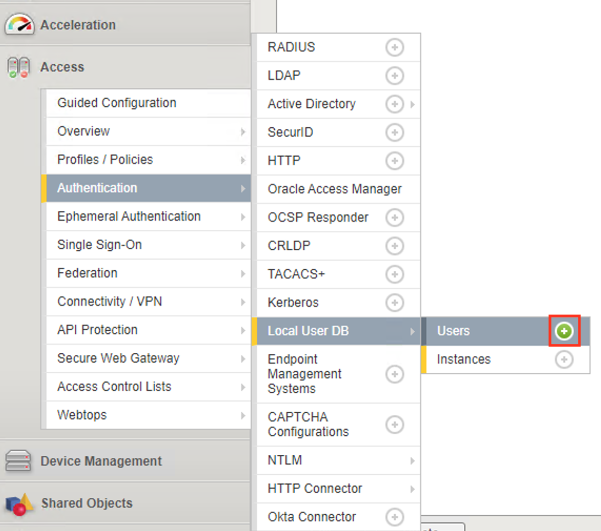
In the User Information window, enter the following information:
User Name: user1Password: user1Confirm Password: user1Click OK

Task 6 - Create a SAML IdP Access Policy¶
Select Access ‑> Profiles/Policies ‑> Access Profiles (Per-Session Policies)
Click the Create button (far right)

In the New Profile window, enter the following information:
Name: idp.acme.com‑pspProfile Type: All(drop down)Profile Scope: Profile(default)Customization Type: modern(default)
Scroll to the bottom of the New Profile window to the Language Settings section
Select English from the Factory Built‑in Languages menu on the right and click the Double Arrow (<<), then click the Finished button.
The Default Language should be automatically set

From the Access ‑> Profiles/Policies ‑> Access Profiles (Per-Session Policies) screen, click the Edit link on the previously created
idp.acme.com-pspline
Click the Plus (+) Sign between Start and Deny

In the pop-up dialog box, select the Logon tab and then select the Radio next to Logon Page, and click the Add Item button
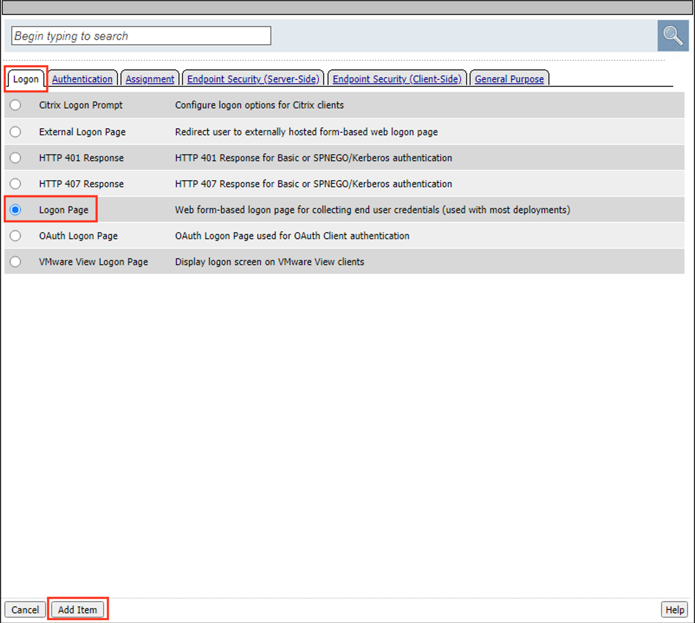
Click Save in the resulting Logon Page dialog box

Click the Plus (+) Sign between Logon Page and Deny
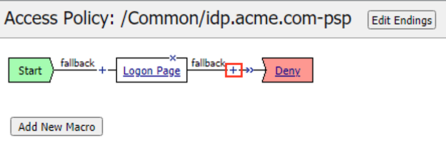
In the pop-up dialog box, select the Authentication tab and then select the Radio next to LocalDB Auth, and click the Add Item button
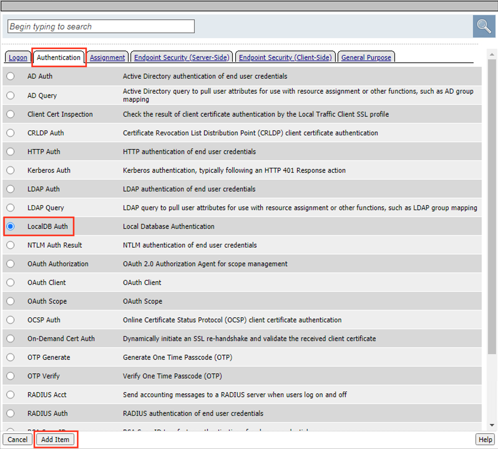
In the resulting LocalDB Auth pop-up window, select
/Common/usersfrom the LocalDB Instance drop down menuClick Save at the bottom of the window

Click the Plus (+) Sign on the successful branch between LocalDB Auth and Deny
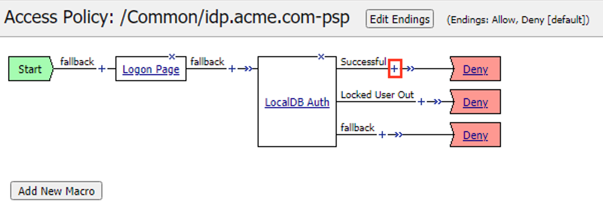
In the pop-up dialog box, select the Assignment tab and then select the Radio next to Advanced Resource Assign, and click the Add Item button
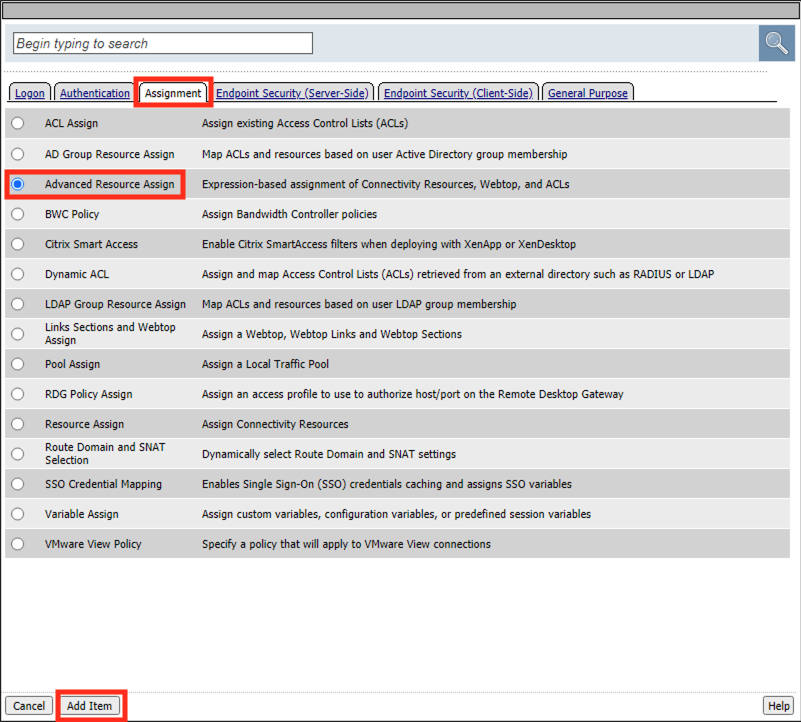
In the resulting Advanced Resource Assign pop-up window, click the Add New Entry button
In the new Resource Assignment entry, click the Add/Delete link

In the resulting pop-up window, click the SAML tab, and select the Checkbox next to /Common/sp.acme.com
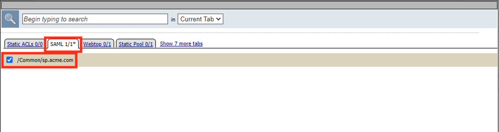
Click the Webtop tab, and select the Checkbox next to
/Common/full_webtopClick the Update button at the bottom of the window to complete the Resource Assignment entry
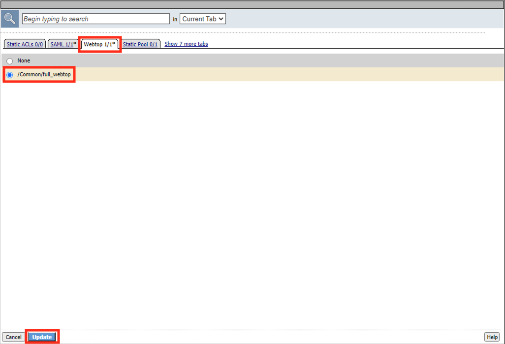
Click the Save button at the bottom of the Advanced Resource Assign window
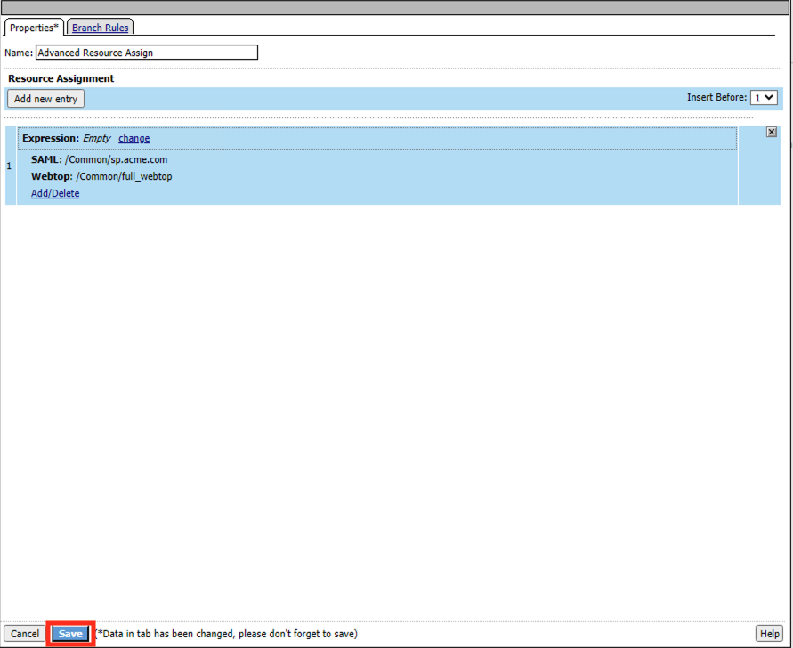
In the Visual Policy Editor, select the Deny ending on the fallback branch following Advanced Resource Assign
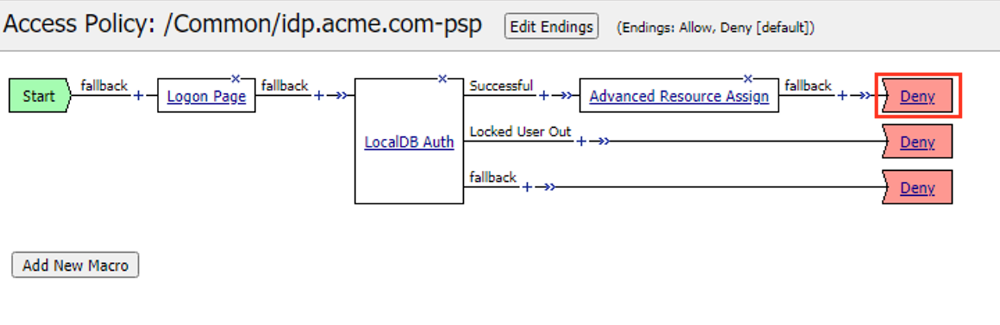
In the Select Ending dialog box, selet the Allow radio button and then click Save

In the Visual Policy Editor, click Apply Access Policy (top left), and close the Visual Policy Editor
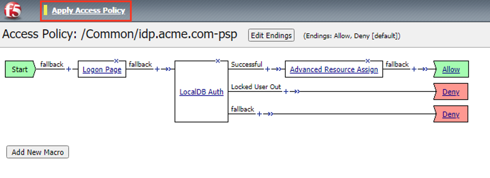
TASK 7 - Create the IdP Virtual Server¶
Begin by selecting Local Traffic ‑> Virtual Servers
Click the Create button (far right)
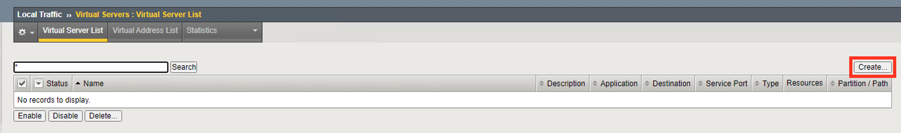
In the New Virtual Server window, enter the following information:
General Properties Name: idp.acme.comDestination Address/Mask: 10.1.10.102Service Port: 443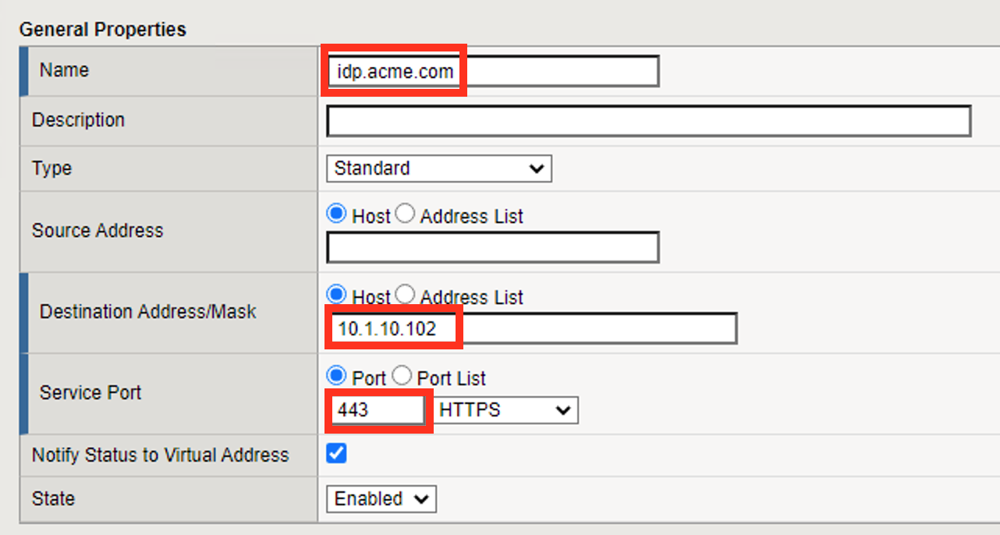
Configuration HTTP Profile: http(drop down)SSL Profile (Client) wildcard.acme.com
Access Policy Access Profile: idp.acme.com-psp
Scroll to the bottom of the configuration window and click Finished
TASK 8 - Test the Configuration¶
From the jumphost, navigate to the SAML IdP you previously configured at https://idp.acme.com.
Logon with the the following credentials:
- Username:user1
- Password:user1

Click sp.acme.com
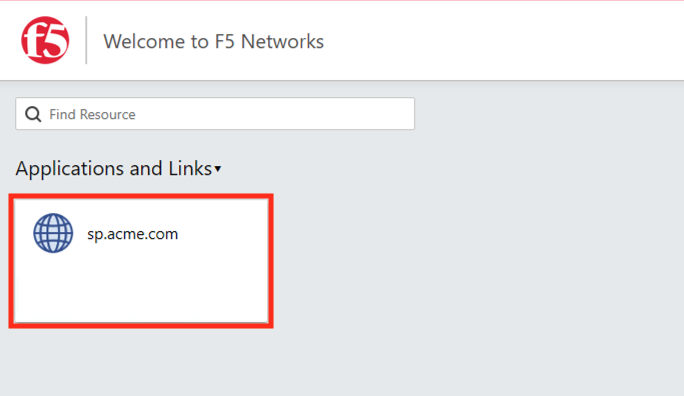
You are then successfully logged into https://sp.acme.com and presented a webpage.
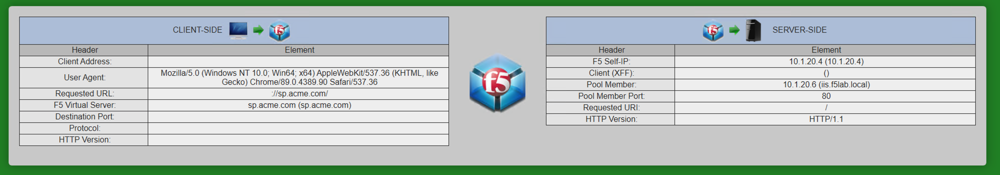
Review your Active Sessions (Access ‑> Overview ‑> Active Sessions)
Review your Access Report Logs (Access ‑> Overview ‑> Access Reports)
Task 9 - Lab Cleanup¶
From a browser on the jumphost navigate to https://portal.f5lab.local
Click the Classes tab at the top of the page.
Scroll down the page until you see 301 SAML Federation on the left
Hover over tile SAML Identity Provider (IdP) - LocalDB Auth. A start and stop icon should appear within the tile. Click the Stop Button to trigger the automation to remove any prebuilt objects from the environment
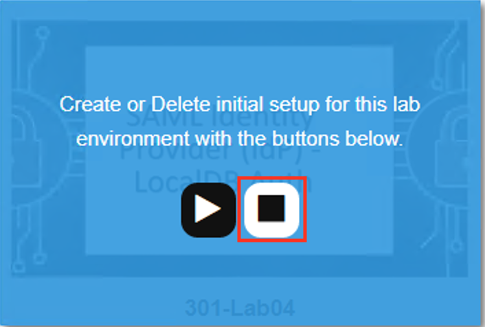 The screen should refresh displaying the progress of the automation within 30 seconds. Scroll to the bottom of the automation workflow to ensure all requests succeeded. If you you experience errors try running the automation a second time or open an issue on the Access Labs Repo.
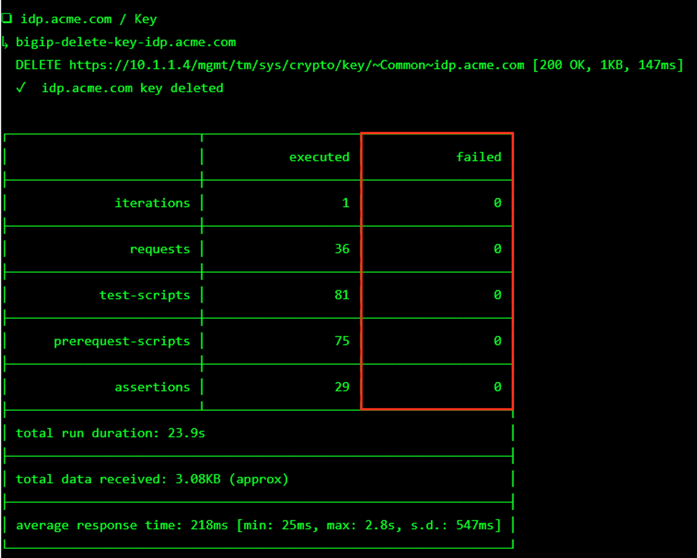
This concludes the lab.